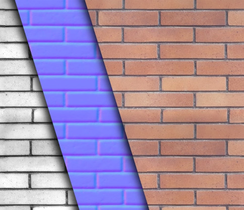
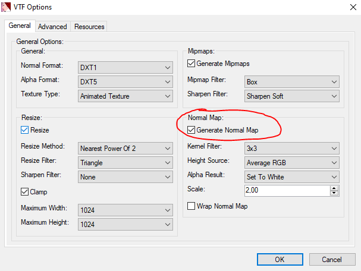
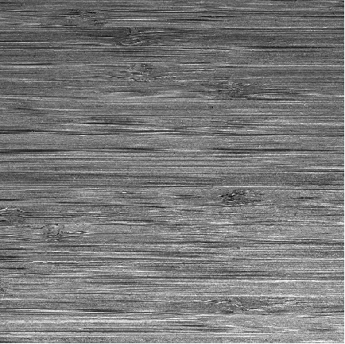
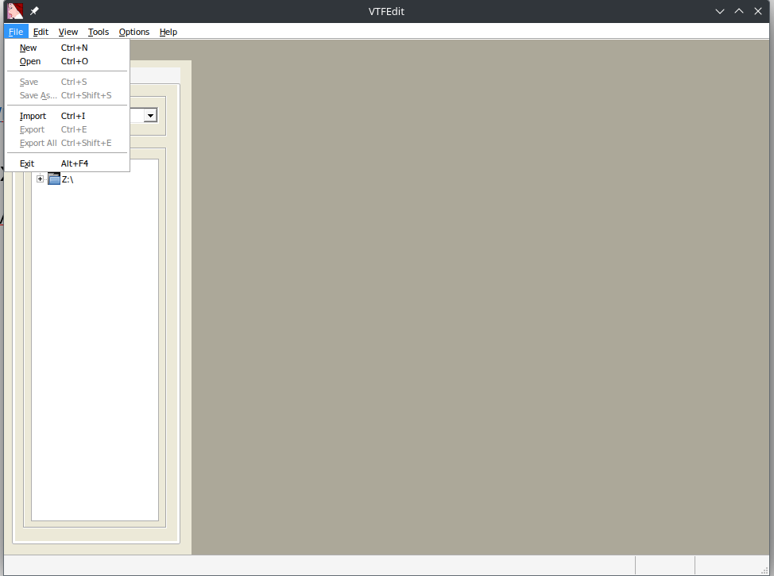
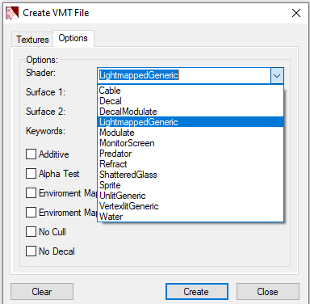
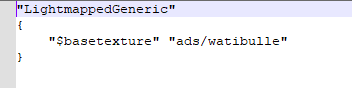
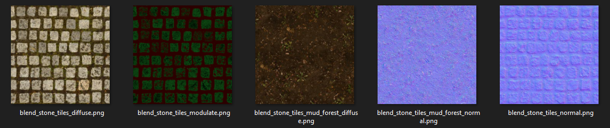

Les Textures
https://github.com/NeilJed/VTFLib
Une texture est une ou plusieurs images que nous allons utiliser en jeu, que ce soit pour l'interface, les murs des bâtiments ou les modèles 3D.
Pour utiliser les images, nous avons besoins de les convertis dans un format le .VTF et ensuite les répertorier avec un .VMF.
Crée une Texture
Nous avons plusieurs moyens de faire une texture, cela peut se faire avec un dessin ou en prenant une photo.
Les dimensions des textures sont le plus souvent des multiples de 2 256x256px, 512x512px.
Malheureusement cela ne suffit pas à créer une texture ! En effet, certaines textures sont composées de plusieurs Images comme pour la réflexion de la lumière, la profondeur etc... Quand la texture possède cela, on appelle sa un materials.
Pour plus de détails cliquer ici Web TV - #10 La 3D : Améliorer les Textures

Crée une normal map

Une normal crée des effets de reliefs sur la texture

Pour en créer une, il faut importer sa texture sur un logiciel de retouche d'image comme Gimp ou Photoshop voici comment faire.
Photoshop
Filter → 3D → Generate Normal Map
il suffit d'exporter sa normal File → Export
Gimp
Filter->generic->Normal map
VTFEdit
Quand vous importer une texture, cocher «Generate Normal Map».

Bump Map
Une Bump Map permet de simuler les bosses et les creux
Comme pour la normal map le bump mapping va convertir l'image en une autre image, une image en nuance de gris, en blanc ce sont les bosses et en noir ce sont les creux.

Materials
Le materials regroupe toutes les textures qui compose notre image en un seul fichier

Convertir une texture en VTF
https://github.com/NeilJed/VTFLib
Hammer ne lit que les fichiers VTF, pour Valve Texture Format.
Heureusement, nous avons le logiciel VTFLib pour convertir en VTF.
Utiliser le logiciel VTFLib. (Ce n'est pas compliqué, il est en lien juste en haut)
Vous avez juste faire Import votre Image et magique, elle est convertit en VTF !
Sauvegarder là et placer là, dans le dossier materials de votre mod.

Le fichier VMT pour Valve Material indique, tout les image dans la texture. Il crée un material.
Nous allons importer le fichier image puis exporter en VMT.
Tools->Create_VMT

On va mettre tous les éléments qui constitue notre texture (normal, bump, ect..). Il reste plus que l'on mette sa dans le dossier «materials» et c'est bon.
(Attention VMT est juste un fichier texte normal, n'oublier pas de mettre les fichiers VTF avec.)
Changer le shader de la texture
Votre Texture à un Shader, par default c'est LightmappedGeneric qui fait adapter pour les textures de mur.

Pour les modèles 3D le .vmt doit être en "VertexlitGeneric" comme shader.
Maintenant, vous pouvez créer et placer vos .vmt dans le même dossier que votre texture (materials).
Vous devriez avoir quelque chose qui devrait ressemble à sa.
(«modname»\materials\ads\watibulle.vmt «modname»\materials\ads\watibulle.vtf)

"LightmappedGeneric"
{
"$basetexture" "ads/watibulle"
}
Texture Blend
https://developer.valvesoftware.com/wiki/$blendmodulatetexture
La texture blend est un mélange de deux textures, elles sont très pratiques pour ajouter des aspérités.

Pour créer, nous avons besoin des deux textures est une texture modulate rouge et vert qui va indiquer comment doive se mélanger les deux textures.

"WorldVertexTransition"
{
"$basetexture" "urban/blend_stone_tiles_diffuse"
"$bumpmap" "urban/blend_stone_tiles_normal"
"$basetexture2" "urban/blend_stone_tiles_mud_forest_diffuse"
"$bumpmap2" "urban/blend_stone_tiles_mud_forest_normal"
"$surfaceprop" "Brick"
"$surfaceprop2" "Dirt"
"$basetexturetransform" "center .5 .5 scale 2 2 rotate 0 translate 0 0"
"$basetexturetransform2" "center .5 .5 scale 4 4 rotate 0 translate 0 0"
"$alphatest" 1
}
Pour utiliser la texture blend cf.Utiliser les textures Blends
Texture Devs
Les Textures dev sont des textures créer par Valve pour aider aux mesures.
dev_measurewall

Celle-ci permettent de connaitre mesures avec la taille d'un mur soit 128 sur 128 soit 2.5m.
"dev_measurewall01c" mets en avant la taille du joueur.